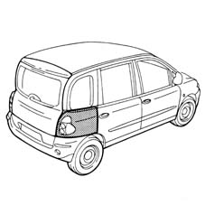
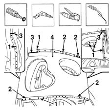
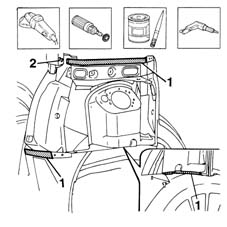
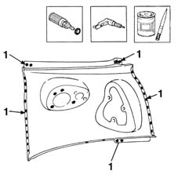
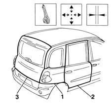
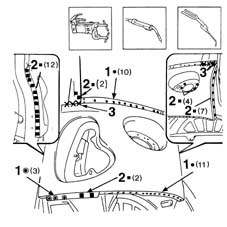
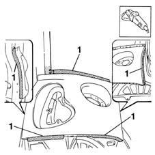
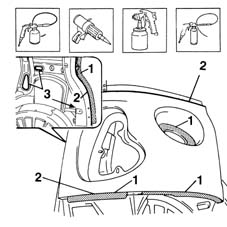

7210E52 R.R. REAR WING
- Path
- Procedures > 72 PANELS AND FRAME > 7210 REMOVING REFITTING > 7210E EXTERNAL PARTS > 7210E52 R.R. REAR WING
- Kind
- repair procedure (removal / refitting; the operation number is the code)
- Applies to
- all engines; all production periods
- Interactive page
- https://sloeber94.github.io/elrnDB-fMltpl/en/#/2892326
Applies to: all engines; all production periods
 Removing
Removing
 Refitting
RefittingCheck if any of the connected parts are deformed by checking body alignment dimensions. Use appropriate measurement tools (e.g. gauges).
Straighten the body if necessary.

Applies to: all engines; all production periods
Use a rotary brush to remove paint to expose the spot welds.
1. Drill out the spot welds shown in the figure.
2. Use a chamfering machine to remove the spot welds shown in the figure.
3. Using an oxyacetylene torch to remove the brazing.
4. Remove the car's rear wing.

Applies to: all engines; all production periods
Straighten the edges of the wing frame using a mallet and profiled stake.
Use a grinding wheel to remove the spot weld residues.
Use a rotary brush to clean the treated areas.
1. Apply the electroweldable paint finish.
2. Make holes in the car as shown in the figure.

Applies to: all engines; all production periods
Refitting
RemovingUse a rotary brush to remove the corrosion-proofing from around the inner and outer edge of the part.
1. Drill holes as shown in the figure.
Apply the electroweldable paint finish.

Applies to: all engines; all production periods
1. Position the part on the car and secure using self-locking grippers.
2. Fit the door sealing strip, catch striker and rear door.
3. Fit the tailgate seal and tailgate.
Check the alignment and ensure the surrounding gaps are even.
Remove the components used for adjustment.

Applies to: all engines; all production periods
1. Use a spot welder to weld the areas shown in the figure.
2. Use a MIG welder to fill the holes made previously.
3. Use the oxyacetylene torch and hot-solder the areas shown in the figure.

Applies to: all engines; all production periods
Correct any deformations in the panel using a profiled stake and mallet.
1. Use a grinding wheel to dress the weld and remove residues.

Applies to: all engines; all production periods
1. Apply rust-proofing to newly-welded areas.
2. Seal the joint lines between the part and the car.
Proceed with painting in accordance with the specified procedure.
3. Apply wax oil inside the rear wing.

Applies to: all engines; all production periods
Refit fouling parts.